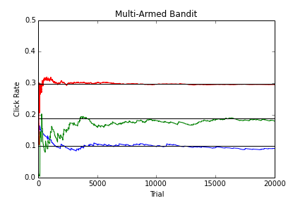
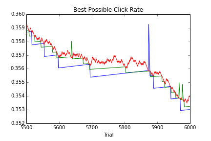
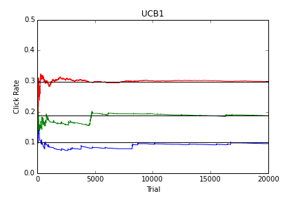
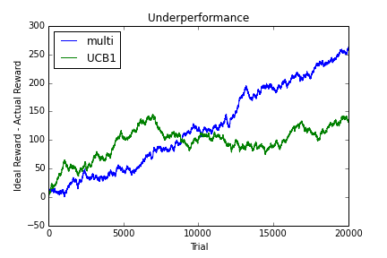

Scenario
A common problem any online company faces is how to choose among different versions of a webpage. For concreteness, suppose a charity is considering three colors for their "donate" button: blue, green, or red. The assumption is that each color has an underlying probabilty of being clicked when seen by a visitor to the page. The goal is to determine which color has the highest click rate and present that to visitors, in order to maximize revenue.
Multi-Armed Bandit
Of course, we never know with certainty which button is best, otherwise the testing would be moot. So we must balance the need to sample the different colors (exploration) with the desire to offer what is probably the best color (exploitation). The Multi-Armed Bandit algorithm is a simple approach: choose the best performing color most of the time, but occasionally choose a color at random, say, 10% of the time.
Below is the result of a simulation with 20,000 trials or page views. The colored lines are the respective observed click rates for the button colors over the course of the experiment. The black horizontal lines are the actual underlying click rates, which we know since this is a simulation. Note that the best performing red button quickly converges near the true rate, while the greena and blue remain comparatively far from the true rates. This is not surprising since the red button is shown over 90% of the time, but the green or blue only around 3% of the time.

UCB1
With more trials, we become more confident that the red button is the winner. But the Multi-Armed Bandit nevertheless always explores the other buttons 10% of the time. A refinment to our testing would be to explore less frequently as the sample size increases and the winner becomes more apparent. There is such an algorithm, for obscure reasons, named "UCB1". Here's the trick: instead of choosing the button with the highest observed click rate, choose the button with the highest "best possible" click rate, which is related to the observed rate thusly:
$$ R_b = R_o + \sqrt{ \log{ \frac{N}{n} }} $$
$R_b$ is the best possible rate, $R_o$ is the observed rate, $N$ is the total number of trials, and $n$ is the number of times a given color has been shown. This formula is an advanced statistical result that is, very roughly, the upper bound of the click rate given a finite sample size. For our purposes, it suffices to understand its behavior. If one color is nearly always chosen, then the ratio $N/n$ approaches one, and the best possible rate approaches the observed rate. On the other hand, if a color is almost never chosen, then the ratio grows linearly with the number of trials, and the best possible rate grows as the square root of the log, which becomes very slow as the argument increases. It is illustrative to look at the behavior of the best possible rates for our simulation.

Over this interval, red usually wins, but occasionally green or blue "catches up" due to the slow growth of the upper bound. When that happens, it is chosen over red temporarily, but quickly drops again because the denominator of the log has incremented. As the simulation continues, this will happen less frequently due to the decreasing growth of the best possible click rate. Thus, the exploration aspect of the UCB1 algorithm diminishes as sample size increases and the click rate of the winning button becomes more tightly bound. Let's see how the click rates converge:

Comparison
The behavior of the click rates over time is quite similar in both algorithms, except that the UCB1 is somewhat less noisy. But we are not really interested in the click rate. What matters is the total number of clicks each algorithm elicits. Since this is a simulation, and we know the real underlying click rate of the winning red button, we can calculate the "ideal reward", that is, the number of clicks if we had simply shown the red button every time. A good comparison of the two algorithms is to plot the difference between the ideal click total and the actual click total:

Initially, the Multi-Armed Bandit is better, but after about 6000 trials, there is a cross over, and UCB1's underperformance flattens out, while that of the Multi-Armed Bandit continues to grow linearly. This is expected, since Multi-Armed Bandit continues to explore the inferior button colors at a constant rate, but UCB1 tends to stick with the winner as the experiment goes on.
Discussion
Both algorithms do quite well in returning a high total reward. In our simulation, the ideal reward was around 6000 clicks after 20,000 trials, so the underperformance was small in either algorithm. The main considerations in choosing between the two are practical. For large enough sample size, UCB1 will eventually outperform Multi-Armed Bandit, but that threshold is highly dependent on the underlying click rates, which in real life are unknown and usually not well separated, unlike in our simulation. The more closely bunched together the click rates, the longer we'll have to wait before UCB1 is superior. Moreover, in reality the sample size could be limited by time or the size of the user base. These factors, combined with the fact that UCB1 is more difficult to understand, suggest that Multi-Armed Bandit is a good algorithm as an initial attempt at online testing, but if you find that you have huge traffic, then try UCB1.